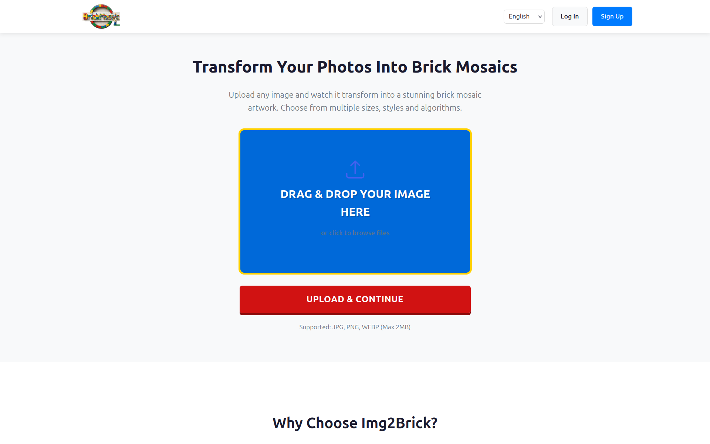
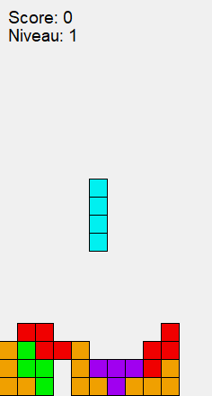
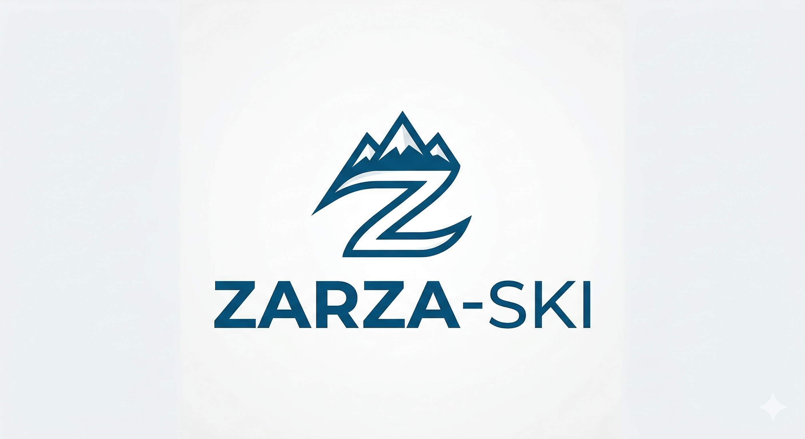
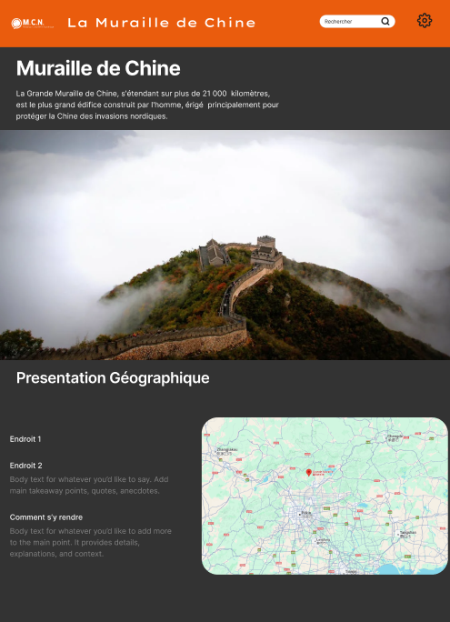
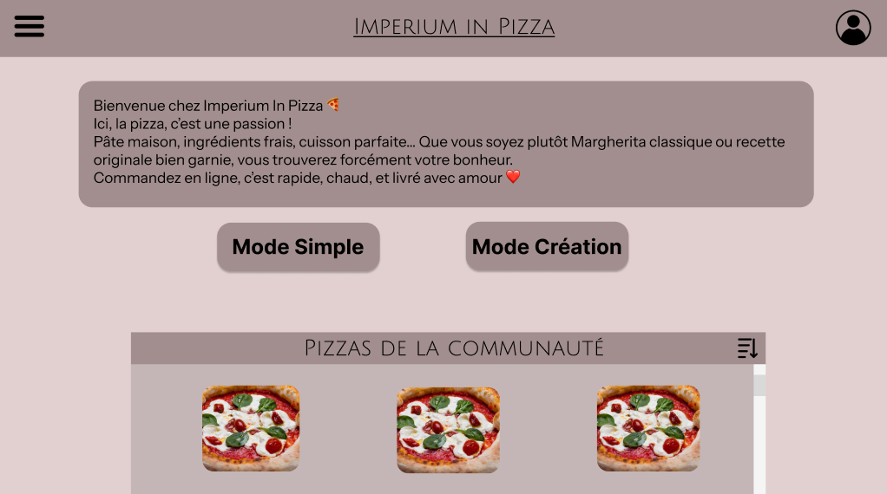

Comprendre avant de développer
Je cherche d'abord à identifier le besoin, le public visé et l'objectif réel du projet pour éviter de produire une solution uniquement technique mais peu utile.
Portfolio professionnel • Développement web • SEO • Automatisation • Validation technique
Étudiant en BUT Informatique & développeur web freelance

Je développe des solutions digitales claires et utiles : sites web professionnels, optimisation SEO, automatisations et outils orientés besoin réel. Mon parcours combine formation informatique, mission freelance et expérience technique en entreprise.
Profil
Je suis étudiant en BUT Informatique à l'Université Gustave Eiffel. Je construis progressivement un profil polyvalent autour du développement web, des solutions digitales, de l'automatisation et de la validation technique. J'aime les projets concrets, utiles et compréhensibles par un utilisateur final.
Je cherche d'abord à identifier le besoin, le public visé et l'objectif réel du projet pour éviter de produire une solution uniquement technique mais peu utile.
Je travaille sur des interfaces lisibles, des contenus structurés, un parcours utilisateur simple et une base technique maintenable.
Mes expériences chez SETELIA et Be-nergie me permettent de compléter ma formation par des contraintes professionnelles : qualité, communication, fiabilité et résultat.
Expériences professionnelles
Cette section est volontairement mise en avant : elle montre mon passage du cadre scolaire à des missions avec des enjeux concrets.
Accompagnement de Be-nergie dans le développement et l'optimisation de sa présence digitale. La mission ne se limite pas à la création d'un site : elle regroupe aussi la structuration des contenus, le référencement naturel, l'expérience utilisateur et la mise en place d'automatisations utiles.
Expérience en environnement technique professionnel autour de la validation de terminaux mobiles. Cette mission m'apporte une culture de la qualité, de la conformité et de la rigueur dans l'exécution de tests.
Site client consultable, lié à ma mission freelance en développement web, SEO et automatisation.
Visiter le siteMes projets techniques, expérimentations et travaux issus de mon parcours en informatique.
Voir mon GitHubMon parcours, mes expériences et mes mises à jour professionnelles.
Voir mon LinkedInCompétences & connaissances
Les compétences sont regroupées par usage pour être plus compréhensibles par un recruteur, un client ou un utilisateur externe.
Création d'interfaces lisibles, responsive et adaptées à un besoin utilisateur.
Développement de fonctionnalités, manipulation de données et structuration de bases de données.
Optimisation d'une présence en ligne et mise en place de processus plus fluides.
Travail en équipe, suivi de projet, versionnement et rigueur technique.
Formation
Cette partie montre mon cadre académique sans prendre le dessus sur mes expériences professionnelles.
Formation axée sur la programmation, l'algorithmique, les bases de données, les réseaux, les systèmes, la gestion de projet et le travail en équipe.
Concevoir et développer des applications répondant à un besoin.
Analyser et améliorer une solution sur le plan logique ou algorithmique.
Comprendre les systèmes, services, bases de données et environnements techniques.
Organiser les données, les outils et le suivi d'un projet informatique.
Piloter un projet, cadrer les besoins et produire des livrables cohérents.
Travailler en équipe, communiquer et contribuer à un projet collectif.
Projets académiques
Ils sont moins mis en avant que mes expériences, mais restent utiles pour comprendre les compétences acquises en formation.

Site e-commerce permettant de générer des mosaïques LEGO à partir d'images fournies par les utilisateurs, puis de préparer la livraison des pièces nécessaires.

Développement d'un jeu Tetris avec gestion de la logique de jeu, des déplacements, des collisions et de l'affichage.
Projet orienté programmation objet avec règles de jeu, calculs de scores et structuration du code en Java.

Projet combinant modélisation de données, requêtes SQL et intégration web pour représenter une activité de station.

Projet web de présentation avec travail sur la structure des pages, l'intégration, le contenu et la coordination du groupe.

Projet permettant de personnaliser une pizza avec une logique d'interface, de choix utilisateur et de gestion des options.
CV
Mon CV résume mes expériences, ma formation, mes compétences techniques et mes projets les plus pertinents.

Canal principal pour un premier contact professionnel.
Disponible pour un échange rapide ou un suivi de candidature.
Pour suivre mon parcours et mes mises à jour professionnelles.
Paris et périphérie
Mobilité pour les projets, stages et opportunités professionnelles.